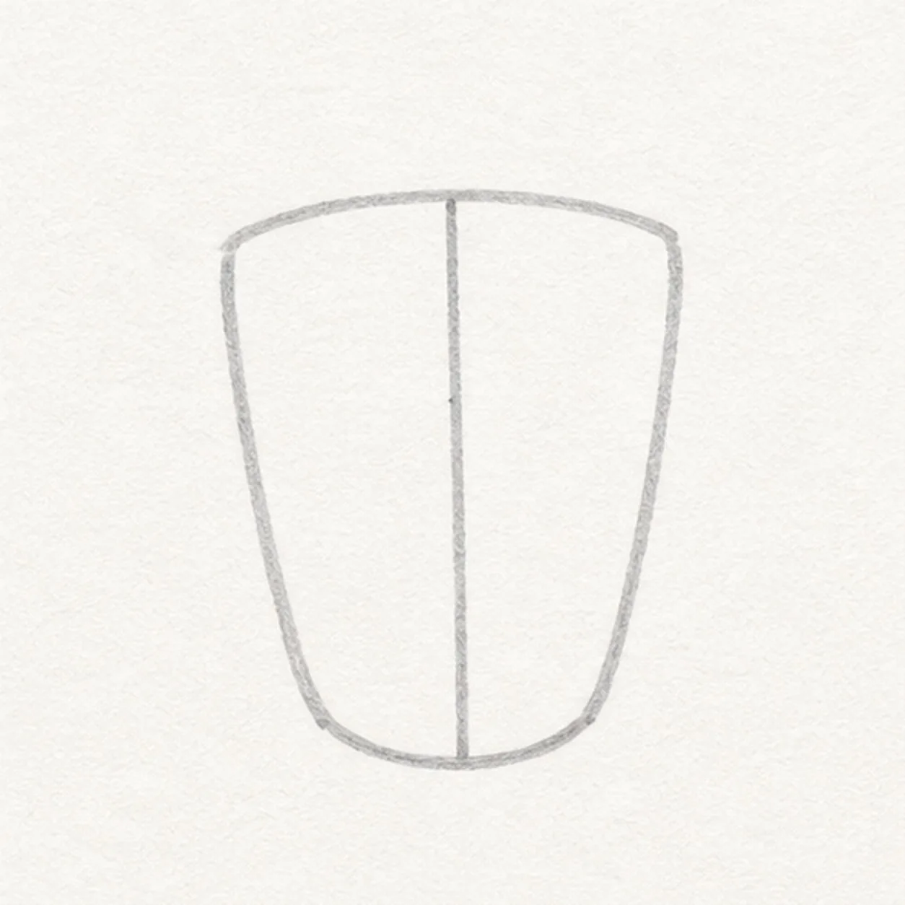
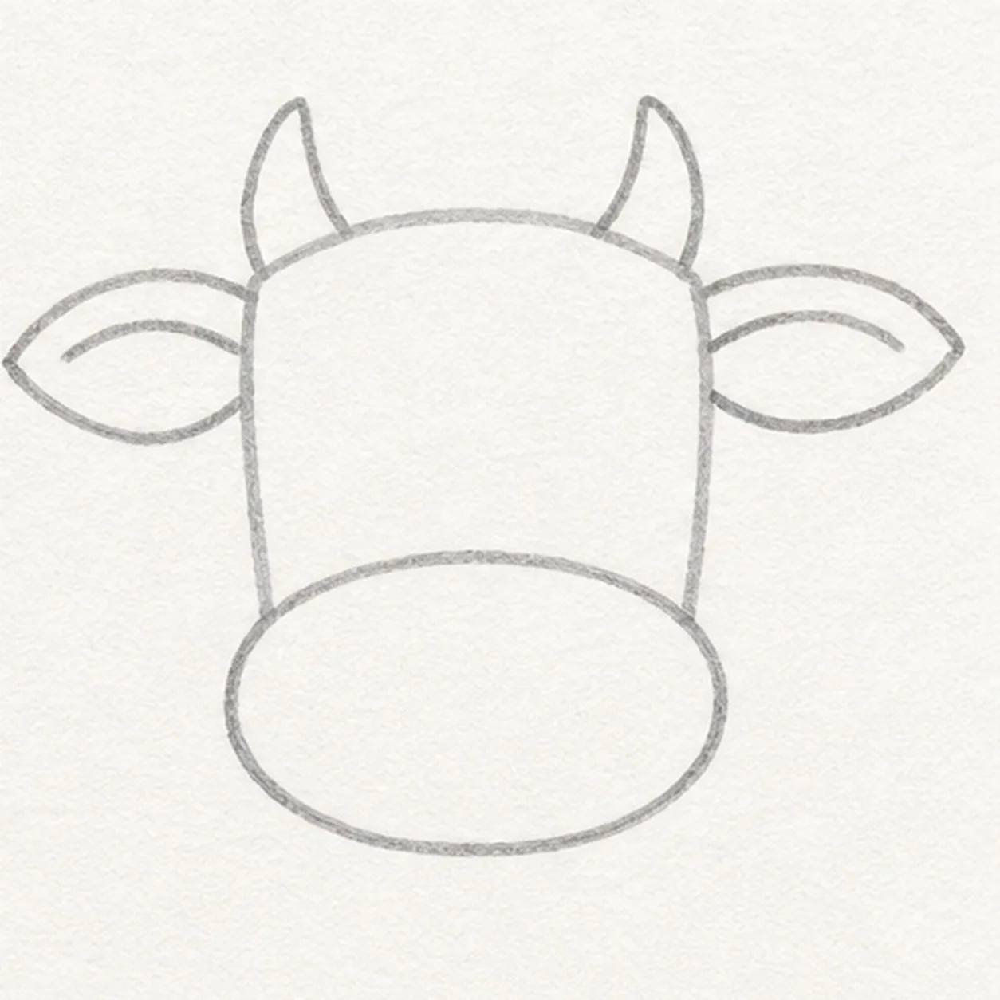
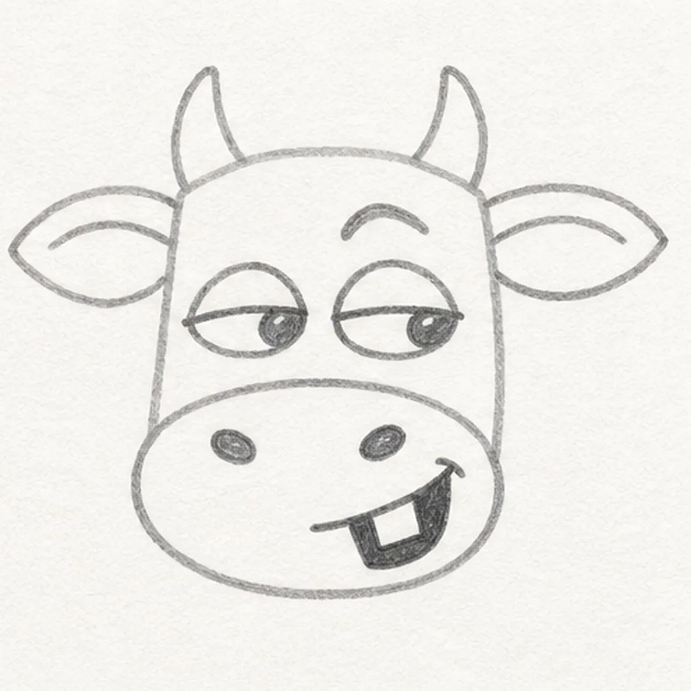
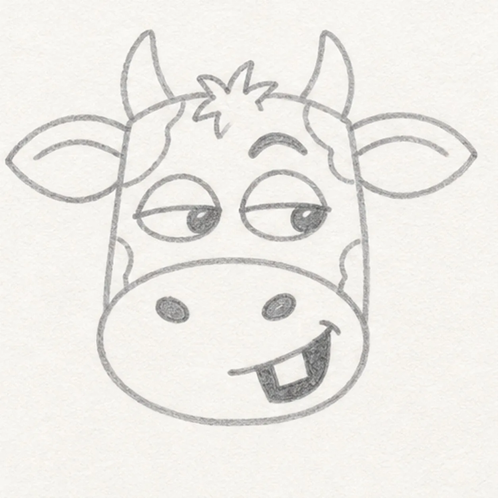
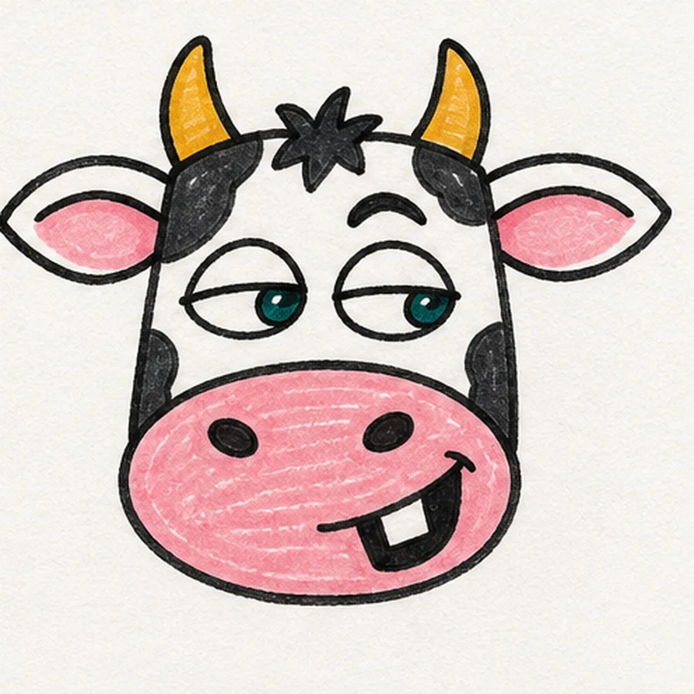

Felt-tip marker mode
Let's draw a cartoon cow face
Treat this as one playful practice round: sketch the idea loosely, simplify the shapes, then commit with confident marker outlines and bright fills.
-
01

Block the cow head
Draw a light broad head that narrows slightly toward the bottom, then place a vertical center guide.
Doodle tip: Ghost both side curves before touching down. Compare the empty space on either side of the center guide instead of trying to make the outline mechanically perfect.
-
02

Add ears, horns, and muzzle
Attach two wide ears and two short horns near the top, then place one large oval muzzle across the lower half of the established head.
Doodle tip: Mark the ear tips and horn tips first. Those four landmarks help the face feel balanced while still leaving room for a little handmade asymmetry.
-
03

Aim the cheeky expression
Add half-lidded almond eyes looking to one side, lift one eyebrow, place two nostrils, and curve a crooked open grin around one square tooth.
Doodle tip: Draw the eyelids before the irises so both pupils can point the same way. Let the raised brow and off-center tooth exaggerate the sideways attitude.
-
04

Place tuft and patches
Add a small forehead tuft and several irregular cow patches around the existing face.
Doodle tip: Keep every patch a different shape and leave breathing room around the eyes and grin. You can move the spots around on your own cow without changing the lesson structure.
-
05

Ink and color the cow
Trace the established face with thick black marker, fill the patches black, muzzle and ears pink, horns golden yellow, and irises teal.
Doodle tip: Let each fill dry before reinforcing a nearby black edge. Pull the pink strokes across the muzzle in the same direction so the visible marker texture feels intentional.
-
06
Milk the expression
Strengthen the existing outlines, sharpen the sideways eyes and raised brow, and tidy the established black, pink, golden-yellow, and teal fills.
Doodle tip: Stop before adding a bell, body, barn, border, or words. The half-lidded side-eye, raised brow, and one-tooth grin already make this cow unmistakably yours.